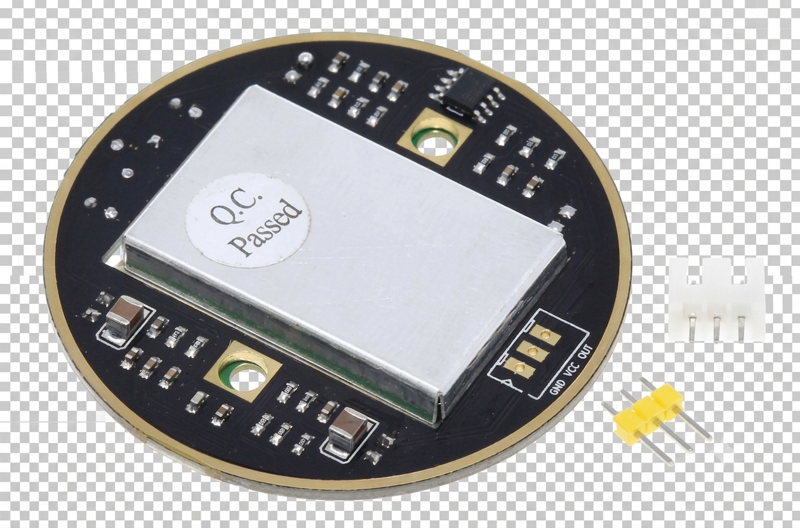
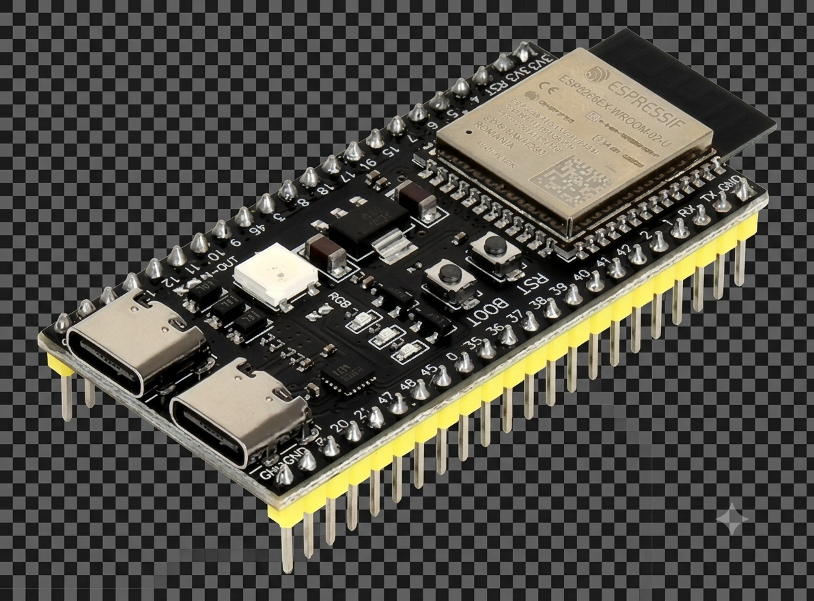
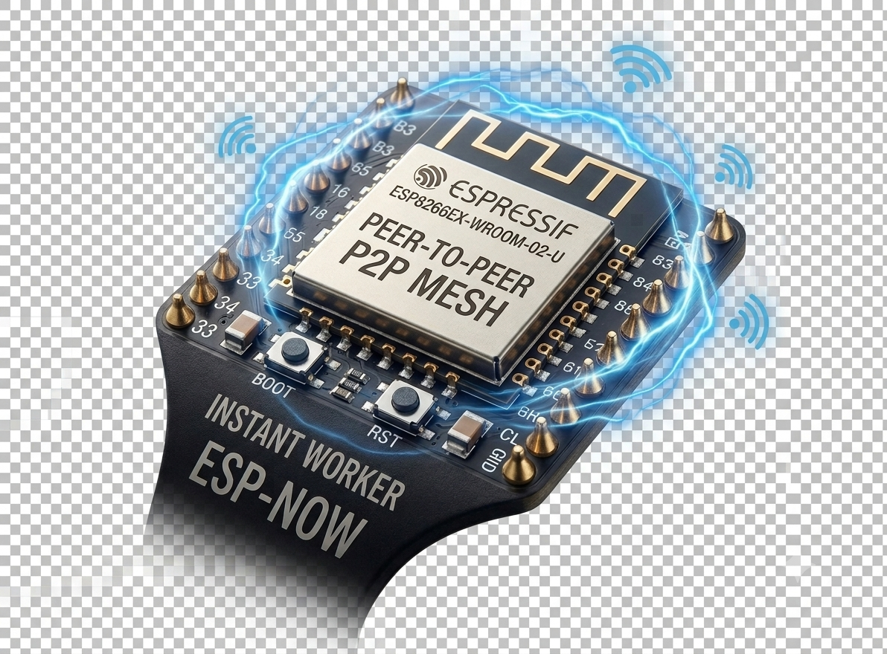

El problema de la seguridad pasiva.
Los conos y cintas reflectantes dependen de que el conductor los vea. Con niebla densa o lluvia en la Araucanía, el tiempo de reacción humano es de 0 segundos.
INNSPIRA 2026
Seguridad que se adelanta.
El primer sistema IIoT modular para conos de tránsito. Detecta invasiones vehiculares mediante microondas a través de la niebla y alerta en milisegundos.
Desde $X CLP por nodo. Implementación de fricción cero.
Estado: Operativo | Red Mesh: Conectada (10.5 GHz)
Los conos y cintas reflectantes dependen de que el conductor los vea. Con niebla densa o lluvia en la Araucanía, el tiempo de reacción humano es de 0 segundos.
La humedad satura los lentes de los sistemas LiDAR u ópticos. EVI-Cap utiliza Radar de Microondas que atraviesa cualquier clima sin degradarse.

El Radar Doppler monitorea variaciones de frecuencia a 30 metros de distancia continua.

El ESP32-S3 procesa vectores, distinguiendo el tráfico normal de una intrusión en la berma.

Transmisión peer-to-peer (ESP-NOW) que hace vibrar la pulsera del trabajador al instante.

Despliegue en Terreno
Carcasa con optimización topológica y sellado hermético industrial. El anillo óptico de alta potencia asegura visibilidad complementaria mientras el hardware interno resguarda el perímetro de la faena.
Simulación: Niebla / Ruta 5 Sur
Desafío INNSPIRA: Viabilidad e Impacto
Análisis de la distancia recorrida a ciegas por un vehículo antes de que el conductor logre reaccionar bajo condiciones de visibilidad reducida en el sur de Chile.
1.5 s
Tiempo promedio de percepción y reacción humana en carretera con clima adverso.
42 mt
Recorridos a ciegas a 100 km/h antes de que el chofer siquiera toque el freno.
< 25 ms
Detección por microondas y propagación de red que gana metros de vida para la cuadrilla.
* Fuente: Modelado matemático de frenado de emergencia basado en los reportes anuales de siniestralidad en zonas de obras de CONASET.
Equipo Fundador
Somos estudiantes de la Universidad Católica de Temuco. Combinamos electrónica de hardware, telecomunicaciones y análisis de sistemas para construir tecnología industrial que salva vidas.
Líder de Proyecto
Arquitectura de hardware IoT, diseño de PCB y firmware en tiempo real (FreeRTOS).
Ingeniero de Redes
Implementación del protocolo ESP-NOW y topología de red Mesh de latencia ultra baja.
Diseño Mecánico
Modelado 3D, empaquetadura IP67 y ergonomía industrial de la pulsera háptica.
Telemetría y Datos
Integración Cloud, interfaz web (Gemelo Digital) y análisis de señales del radar.